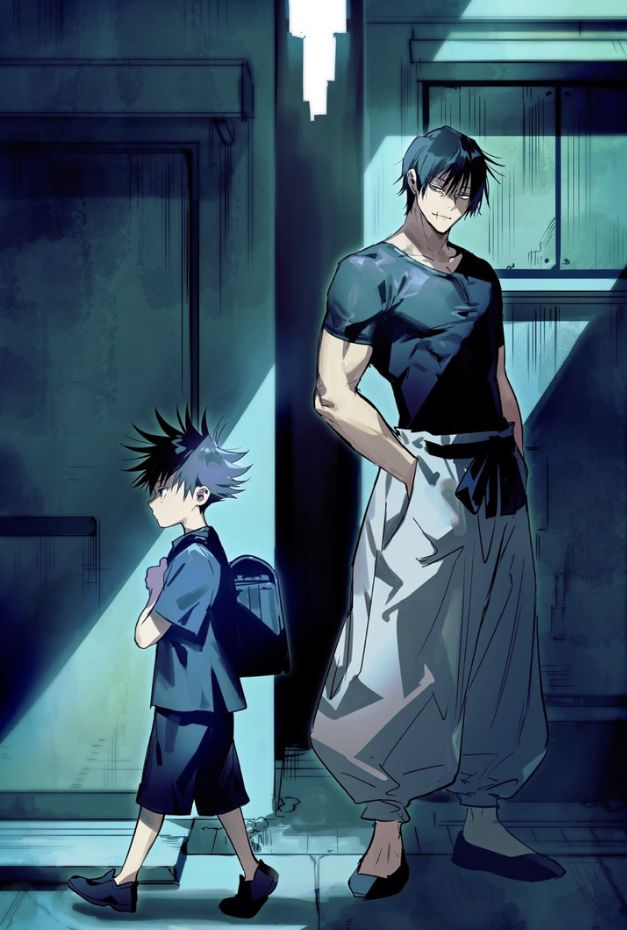

Infancia y Orígenes
Nacimiento y abandono
Hijo de Toji Fushiguro. Su padre lo nombra "Megumi" (bendición) y posteriormente acuerda su venta al Clan Zenin debido a su heredada Técnica de las Diez Sombras.